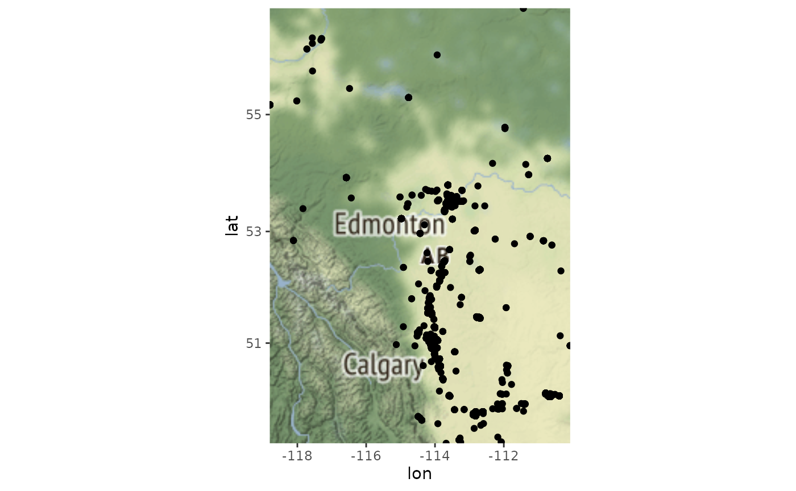
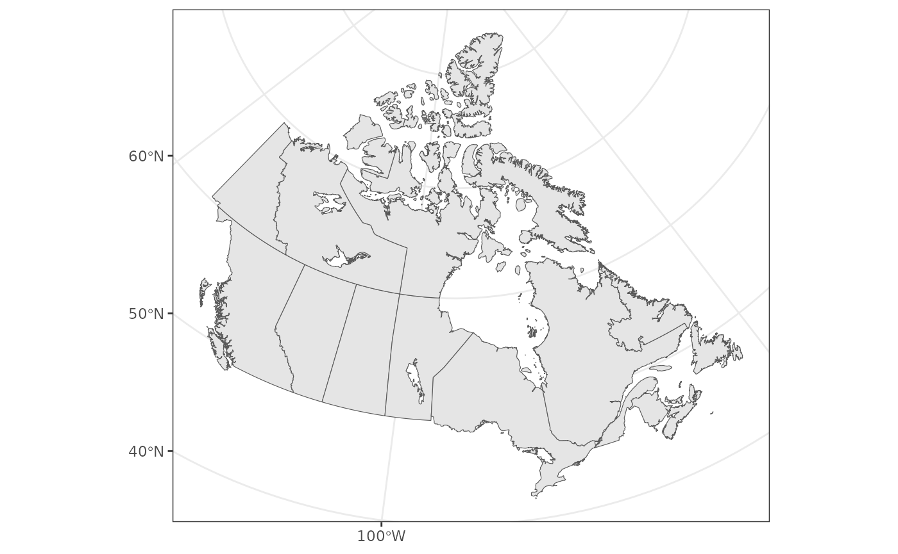
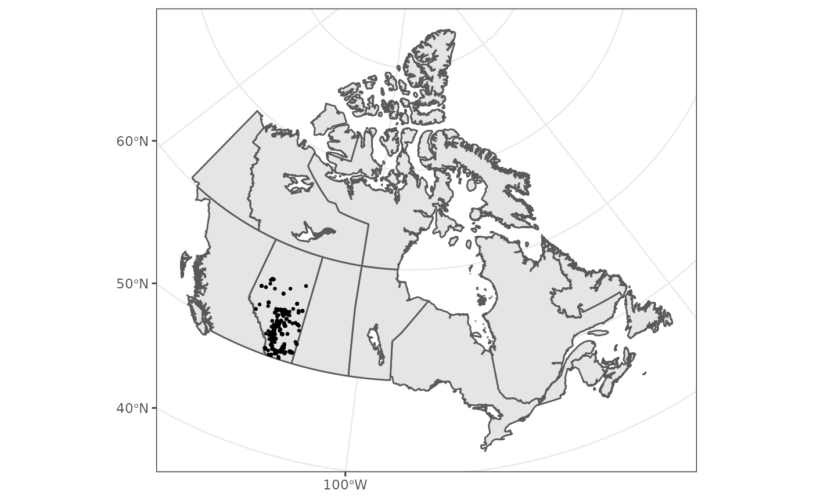
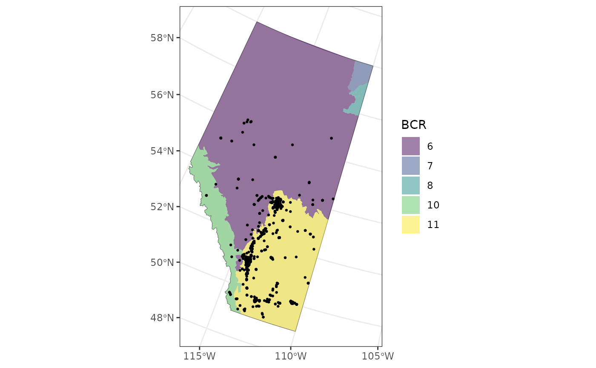
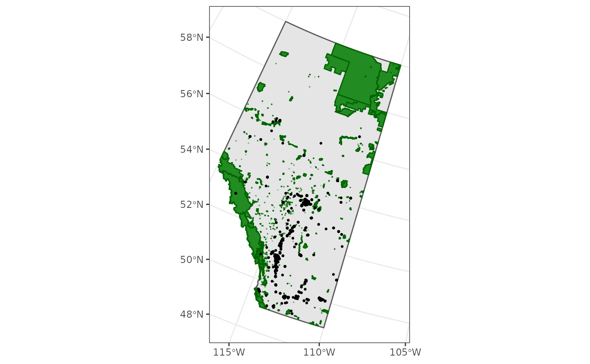
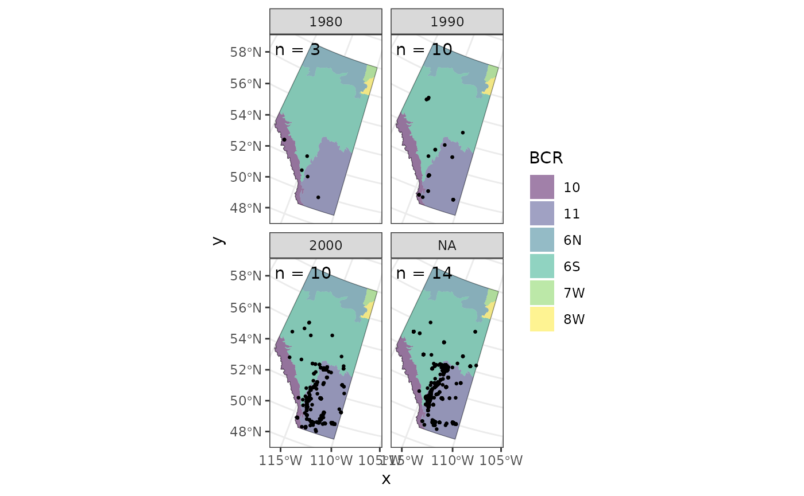
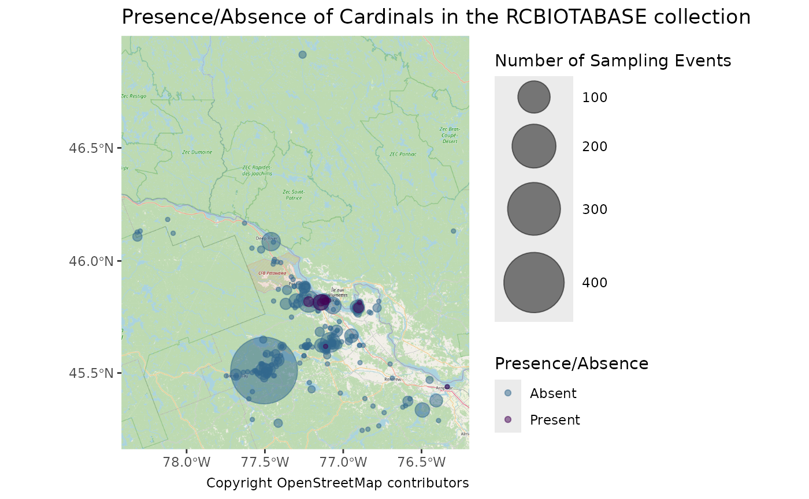
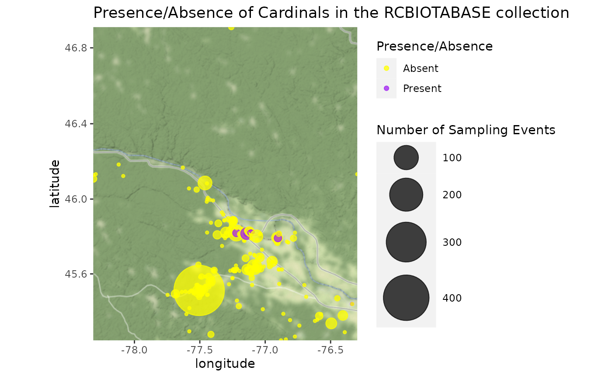

Mapping Observations
2022-02-25
Source:vignettes/articles/mapping-observations.Rmd
mapping-observations.RmdIn this article we’ll walk through how to create various types of maps of the observations downloaded with naturecounts to get a sense of the spatial distribution.
The following examples use the “testuser” user which is not available to you. You can quickly sign up for a free account of your own to access and play around with these examples.
Setup
To do so we’re going to use the following packages:
library(naturecounts)
library(sf)
library(rnaturalearth)
library(ggmap)
library(dplyr)
library(tidyr)
library(mapview)First we’ll use download some data:
house_finches <- nc_data_dl(species = 20350, region = list(statprov = "AB"),
username = "testuser", info = "nc_tutorial")## Using filters: species (20350); fields_set (BMDE2.00-min); statprov (AB)## Collecting available records...## collection nrecords
## 1 ABATLAS1 10
## 2 ABATLAS2 202
## 3 ABBIRDRECS 4
## 4 BBS 14
## 5 BBS50-CAN 36
## 6 PFW 6110
## Total records: 6,376##
## Downloading records for each collection:## ABATLAS1## Records 1 to 10 / 10## ABATLAS2## Records 1 to 202 / 202## ABBIRDRECS## Records 1 to 4 / 4## BBS## Records 1 to 14 / 14## BBS50-CAN## Records 1 to 36 / 36## PFW## Records 1 to 5000 / 6110## Records 5001 to 6110 / 6110
head(house_finches)## record_id collection project_id protocol_id protocol_type species_id
## 1 225617858 ABATLAS1 1048 NA NA 20350
## 2 225620472 ABATLAS1 1048 NA NA 20350
## 3 225630776 ABATLAS1 1048 NA NA 20350
## 4 225655455 ABATLAS1 1048 NA NA 20350
## 5 225665275 ABATLAS1 1048 NA NA 20350
## 6 225671997 ABATLAS1 1048 NA NA 20350
## statprov_code country_code SiteCode latitude longitude bcr subnational2_code
## 1 AB CA 1547 56.17056 -117.5639 6 CA.AB.19
## 2 AB CA 1548 56.26028 -117.5650 6 CA.AB.17
## 3 AB CA 2991 51.29972 -114.9200 6 CA.AB.15
## 4 AB CA 4156 50.03028 -113.5828 11 CA.AB.03
## 5 AB CA 5307 49.87333 -112.1828 11 CA.AB.02
## 6 AB CA 1536 56.07972 -117.7228 6 CA.AB.19
## iba_site utm_square survey_year survey_month survey_week survey_day
## 1 N/A 11UMC62 1990 5 2 12
## 2 N/A 11UMC63 1991 5 2 12
## 3 N/A 11UPS48 1988 6 2 10
## 4 N/A 12UUA14 1990 8 2 9
## 5 N/A 12UVA12 1989 1 1 1
## 6 N/A 11UMC51 1990 NA NA NA
## breeding_rank GlobalUniqueIdentifier CatalogNumber Locality
## 1 10 URN:NatureAlberta:ABATLAS1:I4063-HOFI I4063-HOFI 11UMN62
## 2 10 URN:NatureAlberta:ABATLAS1:I5194-HOFI I5194-HOFI 11UMN63
## 3 10 URN:NatureAlberta:ABATLAS1:C2013-HOFI C2013-HOFI 11UPG48
## 4 0 URN:NatureAlberta:ABATLAS1:A4101-HOFI A4101-HOFI 12UUL14
## 5 0 URN:NatureAlberta:ABATLAS1:B3021-HOFI B3021-HOFI 12UVL12
## 6 40 URN:NatureAlberta:ABATLAS1:I4060-HOFI I4060-HOFI 11UMN51
## TimeCollected CollectorNumber FieldNumber Remarks ProjectCode
## 1 <NA> 1960 NA <NA> ABATLAS1
## 2 <NA> 1960 NA <NA> ABATLAS1
## 3 <NA> 1317 NA <NA> ABATLAS1
## 4 <NA> 1128 NA <NA> ABATLAS1
## 5 <NA> 1250 NA <NA> ABATLAS1
## 6 <NA> 1941 NA <NA> ABATLAS1
## ProtocolType ProtocolCode ProtocolURL SurveyAreaIdentifier
## 1 Breeding Bird Atlas <NA> <NA> 1547
## 2 Breeding Bird Atlas <NA> <NA> 1548
## 3 Breeding Bird Atlas <NA> <NA> 2991
## 4 Breeding Bird Atlas <NA> <NA> 4156
## 5 Breeding Bird Atlas <NA> <NA> 5307
## 6 Breeding Bird Atlas <NA> <NA> 1536
## SamplingEventIdentifier SamplingEventStructure RouteIdentifier
## 1 I4063 NA <NA>
## 2 I5194 NA <NA>
## 3 C2013 NA <NA>
## 4 A4101 NA <NA>
## 5 B3021 NA <NA>
## 6 I4060 NA <NA>
## TimeObservationsStarted TimeObservationsEnded DurationInHours
## 1 <NA> <NA> <NA>
## 2 <NA> <NA> <NA>
## 3 <NA> <NA> <NA>
## 4 <NA> <NA> <NA>
## 5 <NA> <NA> <NA>
## 6 <NA> <NA> <NA>
## TimeIntervalStarted TimeIntervalEnded TimeIntervalsAdditive NumberOfObservers
## 1 NA NA NA 0
## 2 NA NA NA 0
## 3 NA NA NA 1
## 4 NA NA NA 0
## 5 NA NA NA 0
## 6 NA NA NA 0
## NoObservations ObservationCount ObservationDescriptor ObservationCount2
## 1 NA <NA> <NA> <NA>
## 2 NA <NA> <NA> <NA>
## 3 NA <NA> <NA> <NA>
## 4 NA <NA> <NA> <NA>
## 5 NA <NA> <NA> <NA>
## 6 NA <NA> <NA> <NA>
## ObservationDescriptor2 ObservationCount3 ObservationDescriptor3
## 1 <NA> <NA> <NA>
## 2 <NA> <NA> <NA>
## 3 <NA> <NA> <NA>
## 4 <NA> <NA> <NA>
## 5 <NA> <NA> <NA>
## 6 <NA> <NA> <NA>
## ObservationCount4 ObservationDescriptor4 ObservationCount5
## 1 <NA> <NA> <NA>
## 2 <NA> <NA> <NA>
## 3 <NA> <NA> <NA>
## 4 <NA> <NA> <NA>
## 5 <NA> <NA> <NA>
## 6 <NA> <NA> <NA>
## ObservationDescriptor5 ObservationCount6 ObservationDescriptor6
## 1 <NA> <NA> <NA>
## 2 <NA> <NA> <NA>
## 3 <NA> <NA> <NA>
## 4 <NA> <NA> <NA>
## 5 <NA> <NA> <NA>
## 6 <NA> <NA> <NA>
## AllIndividualsReported AllSpeciesReported
## 1 <NA> Unknown
## 2 <NA> Unknown
## 3 <NA> Unknown
## 4 <NA> Unknown
## 5 <NA> Unknown
## 6 <NA> UnknownSimple Maps
The quickest way to look at the spatial distribution is probably to use Stamen maps through the ggmap package.
First let’s get an idea of how many distinct points there are (often multiple observations are recorded for the same location).
nrow(house_finches)## [1] 6376## [1] 509So we have 509 sites for 6376 observations.
Next let’s convert our data to spatial data so we can extract the spatial extent. Note that we’re using CRS EPSG code of 4326 because that’s reflects unprojected, GPS data in lat/lon. First we omit NAs.
house_finches <- drop_na(house_finches, "longitude", "latitude")
house_finches_sf <- st_as_sf(house_finches,
coords = c("longitude", "latitude"), crs = 4326)We can extract the spatial extent (bounding box) with the st_bbox() function.
st_bbox(house_finches_sf)## xmin ymin xmax ymax
## -118.80042 49.12844 -110.07241 56.73562Now we’re ready to make a map of the distribution of observations. First we get the baselayer map.
map <- get_stamenmap(bbox = as.numeric(st_bbox(house_finches_sf)), zoom = 5)## Source : http://tile.stamen.com/terrain/5/5/9.png## Source : http://tile.stamen.com/terrain/5/6/9.png## Source : http://tile.stamen.com/terrain/5/5/10.png## Source : http://tile.stamen.com/terrain/5/6/10.pngNow we can add our observations. Note that for ggmap, we’ll use non-sf data frame.
ggmap(map) +
geom_point(data = house_finches, aes(x = longitude, y = latitude))
Let’s count our observations for each site.
ggmap(map) +
geom_count(data = house_finches, aes(x = longitude, y = latitude))
Interactive Maps
If we want to get fancy we can also create interactive maps using the mapview packages (see also the leaflet for R package).
More Complex Maps
For more complex, or detailed maps, we can use a variety of spatial data files to layer our data over maps of the area.
For this we’ll get some outlines of Canada and it’s Provinces and Territories from rnaturalearth.
canada <- ne_states(country = "canada", returnclass = "sf") %>%
st_transform(3347)
ggplot() +
theme_bw() +
geom_sf(data = canada)
Let’s add our observations (note that the data are transformed to match the projection of the first layer, here the canada data).

We can also focus on Alberta
ab <- filter(canada, name == "Alberta")
ggplot() +
theme_bw() +
geom_sf(data = ab) +
geom_sf(data = house_finches_sf, size = 0.5)
Perhaps we should see how many of these observations were made in parks.
First we’ll download and extract the Park shapefiles available from the Alberta Parks website.
url <- "https://www.albertaparks.ca/media/2941843/parks_and_protected_areas_alberta.zip"
download.file(url = url)
unzip("parks_and_protected_areas_alberta.zip")
parks <- st_read("Parks_Protected_Areas_Alberta.shp")## Reading layer `Parks_Protected_Areas_Alberta' from data source
## `/home/steffi/Projects/Business/Bird Studies/NatureCounts/naturecounts/vignettes/articles/article_files/Parks_Protected_Areas_Alberta.shp'
## using driver `ESRI Shapefile'
## Simple feature collection with 477 features and 18 fields
## Geometry type: MULTIPOLYGON
## Dimension: XY
## Bounding box: xmin: 170844.3 ymin: 5425575 xmax: 860845.9 ymax: 6659216
## Projected CRS: NAD83 / Alberta 10-TM (Forest)Add this layer to our plot.
ggplot() +
theme_bw() +
geom_sf(data = ab) +
geom_sf(data = parks, colour = "darkgreen", fill = "forestgreen") +
geom_sf(data = house_finches_sf, size = 0.5)
Well it’s actually a bit difficult to tell, there are lots of small parks!
To solve this problem, we can merge our observations with the parks and plot those inside parks separately from those outside parks.
First we’ll transform our observation data to match the CRS of parks, then we’ll join the park information to our observations, based on whether the observations overlap a park polygon (by default this is a left join), and finally we’ll create a new column outside_park that is a category for out or in the park, based on whether the observation was joined to a park name (OC_NAME).
house_finches_sf <- house_finches_sf %>%
st_transform(st_crs(parks)) %>%
st_join(parks) %>%
mutate(outside_park = if_else(is.na(OC_NAME), "Outside Park", "Inside Park"))And now we can see that there are quite a few, if not more, observations outside of parks than in.
ggplot() +
theme_bw() +
geom_sf(data = ab) +
geom_sf(data = parks, colour = "darkgreen", fill = "forestgreen") +
geom_sf(data = house_finches_sf, size = 1) +
facet_wrap(~outside_park)
We might also be interested in observations over time.
First we’ll bin our yearly observations
house_finches_sf <- mutate(house_finches_sf,
years = cut(survey_year,
breaks = seq(1960, 2010, 10),
labels = seq(1960, 2000, 10), right = FALSE))We’ll also want to see how many sample years there are per decade.
years <- house_finches_sf %>%
group_by(years) %>%
summarize(n = length(unique(survey_year)), .groups = "drop")Now we can see how House Finch observations change over the years
ggplot() +
theme_bw() +
geom_sf(data = ab) +
geom_sf(data = parks, colour = "darkgreen", fill = "forestgreen") +
geom_sf(data = house_finches_sf, size = 1.5) +
geom_sf_text(data = years, x = 4427134, y = 2965275, hjust = 0, vjust = 1,
aes(label = paste0("n = ", n))) +
facet_wrap(~years)
Presence/Absence
We can also use some of the naturecounts helper functions to create presence/absence maps.
Here we download data from the RCBIOTABASE collection, make sure to keep only observations where all species and the location were reported, create a new presence column which is either TRUE, FALSE, or NA for each sampling event. Finally we use the format_zero_fill() function to fill in sampling events where cardinals (species_id 19360) were not detected (presence would then be 0).
cardinals <- nc_data_dl(collection = "RCBIOTABASE", username = "testuser",
info = "nc_tutorial")## Using filters: collections (RCBIOTABASE); fields_set (BMDE2.00-min)## Collecting available records...## collection nrecords
## 1 RCBIOTABASE 12811
## Total records: 12,811##
## Downloading records for each collection:## RCBIOTABASE## Records 1 to 5000 / 12811## Records 5001 to 10000 / 12811## Records 10001 to 12811 / 12811
cardinals_zf <- cardinals %>%
filter(AllSpeciesReported == "Yes", !is.na(latitude), !is.na(longitude)) %>%
group_by(species_id, AllSpeciesReported, SamplingEventIdentifier, latitude, longitude) %>%
summarize(presence = sum(as.numeric(ObservationCount)) > 0, .groups = "drop") %>%
format_zero_fill(species = 19360,
by = "SamplingEventIdentifier",
extra_event = c("latitude", "longitude"),
fill = "presence")## - Converted 'fill' column (presence) from logical to numeric
head(cardinals_zf)## SamplingEventIdentifier species_id presence latitude longitude
## 1 RCBIOTABASE-10000-1 19360 0 45.58604 -77.48721
## 2 RCBIOTABASE-10001-1 19360 0 45.51110 -77.50533
## 3 RCBIOTABASE-10002-1 19360 0 45.50803 -77.50786
## 4 RCBIOTABASE-10003-1 19360 0 45.51110 -77.50533
## 5 RCBIOTABASE-10004-1 19360 0 45.51110 -77.50533
## 6 RCBIOTABASE-10005-1 19360 0 45.51110 -77.50533Now that we have our presence/absence data for cardinals, we can create a map.
map <- st_as_sf(cardinals_zf, coords = c("longitude", "latitude")) %>%
st_bbox() %>%
as.numeric() %>%
get_stamenmap(bbox = ., zoom = 8)## Source : http://tile.stamen.com/terrain/8/72/90.png## Source : http://tile.stamen.com/terrain/8/73/90.png## Source : http://tile.stamen.com/terrain/8/72/91.png## Source : http://tile.stamen.com/terrain/8/73/91.png
ggmap(map, base_layer = ggplot(data = cardinals_zf)) +
geom_count(alpha = 0.75,
aes(x = longitude, y = latitude, colour = factor(presence))) +
scale_colour_manual(name = "Presence/Absence", values = c("yellow", "purple"),
labels = c("1" = "Present", "0" = "Absent")) +
scale_size_continuous(name = "Number of Sampling Events", range = c(1, 20)) +
labs(title = paste0("Presence/Absence of Cardinals in the RCBIOTABASE collection"))